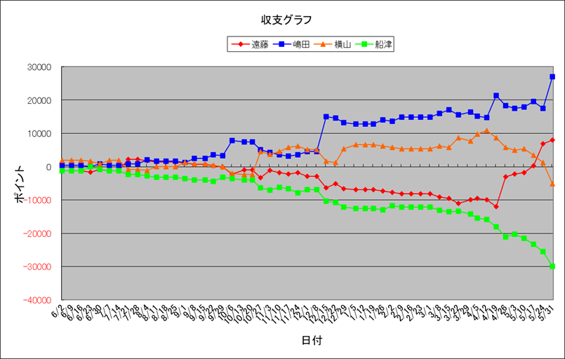

アンティシペイト 500万勝ち！！
ビアンフェ 葵ステークス 重賞勝ち！！
| 順位 | 馬主 | 今年度収支 | 今年度ﾎﾟｲﾝﾄ | 1頭当ﾎﾟｲﾝﾄ | 1走当ﾎﾟｲﾝﾄ | 勝率 | 連対率 | 複勝率 | ﾃﾞﾋﾞｭｰ頭数 | 勝馬頭数 | 出走回数 | 1着 | 2着 | 3着 | 4着 | 5着 | 着外 |
|---|---|---|---|---|---|---|---|---|---|---|---|---|---|---|---|---|---|
| 1 | 嶋田 | 27050 | 18450 | 1230.0 | 271.3 | 23.53% | 38.24% | 50.00% | 15 | 10 | 68 | 16 | 10 | 8 | 8 | 4 | 22 |
| 2 | 遠藤 | 8050 | 13700 | 1141.7 | 304.4 | 28.89% | 44.44% | 46.67% | 12 | 7 | 45 | 13 | 7 | 1 | 1 | 3 | 20 |
| 3 | 横山 | -5150 | 10400 | 693.3 | 115.6 | 16.67% | 32.22% | 45.56% | 15 | 13 | 90 | 15 | 14 | 12 | 8 | 8 | 33 |
| 4 | 船津 | -29950 | 4200 | 280.0 | 80.8 | 17.31% | 38.46% | 51.92% | 15 | 7 | 52 | 9 | 11 | 7 | 5 | 6 | 14 |

Last Updated:2020/05/31